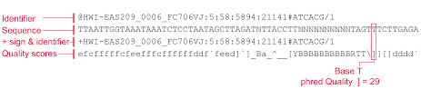

Loading Input Data From a Gz File#
Input#
A fastq file is used for storing biolgical sequence and it’s quality score
Column Syntax - .withColumn (colName: String, col: Column) used to change the value, convert the datatype of an existing column, create a new column,
colName:String – specify a new column you wanted to create. use an existing column to update the value.col:Column – column expression.Spark.read.text() - Spark.read.text(paths) used to load text files into DataFrame whose schema starts with a string column.
import pyspark.sql.functions as F
read='dbfs:/1000.fastq.gz'
input_data = (spark.read.text(read, lineSep='@').filter(F.length('value')>1) )
input_data = (input_data
.withColumn('name', F.split('value', '\n').getItem(0))
.withColumn('seq', F.split('value', '\n').getItem(1))
.withColumn('qual', F.split('value', '\n').getItem(3))
.withColumn("id", F.monotonically_increasing_id())
.withColumn("sid", F.lit('s01'))
.select('id', 'name', 'sid', 'seq', 'qual')
Output in Dataframe:#
id:long
name:string
sid:string
seq:string
qual:string
Output Explanation:
The names ‘id’, ‘name’, ‘sid’, ‘seq’, ‘qual’ all represent a different part of the fastq file
long and string are data types
Data types - a classification that specifies which type of value a variable has
Long data type to contain integer numbers that are too large to fit in the Integer data type. The default value of Long is 0.
String data type is a sequence of characters, either as a literal constant or as some kind of variable.
Explanation:#
import pyspark.sql.functions as F
read='dbfs:/1000.fastq.gz'
We are importing pyspark.sql.functions as F
PySpark is a data analytics tool created by Apache Spark Community for using Python along with Spark
Here we are calling a fastq file and defining it as ‘read’
fastq.gz is the compressed version of fastq file.
The gz file doesn’t need to be unzipped
'dbfs'stands for DataBricks File System which is a distributed file system mounted into a Databricks workspace
- Example of a FASTQ file
- 
input_data = (spark.read.text(read, lineSep='@').filter(F.length('value')>1) )
input_data = (input_data
.withColumn('name', F.split('value', '\n').getItem(0))
.withColumn('seq', F.split('value', '\n').getItem(1))
.withColumn('qual', F.split('value', '\n').getItem(3))
.withColumn("id", F.monotonically_increasing_id())
.withColumn("sid", F.lit('s01'))
.select('id', 'name', 'sid', 'seq', 'qual')
Defining input_data
redefining line separater to
'@'
spark.read.text()is used to read the fastq file ‘read’Using
.filter(F.length())to remove empty lines in the file
Creating a column called name
.withColumnis used to add a new a columnThe column will be called
'name'as mentioned in the code above
F.splitreturns list in a single line and\nis used to get rid of whitespace characters
getItem()extracts a value from the column
getItem(0)the key value here is 0 which is be an integer index indicating the position of the value that you wish to extract
Creating a column called id
monotonically_increasing_id()is used to assign row number.The generated ID from using
monotonically_increasing_id()is guaranteed to be monotonically increasing and unique
Creating a column called sid
'sid'refers to sequence id
F.litcreates a column of literal value.Literal values (constants) are exact values (alphabetic or numeric)
.select is used to select multiple columns
In this case, it’s used to select the columns:
'id', 'name', 'sid', 'seq', 'qual'